Introduction
What is thermal evolution — and why does Pune need to pay attention?
A city's thermal landscape is never static. As forests give way to roads and rooftops, and as farmland becomes apartment blocks, the surface that absorbs sunlight changes fundamentally. Dark asphalt, concrete, and bare soil absorb and re-radiate far more heat than the vegetation they replace. The result is a gradual but measurable warming of the urban surface — a phenomenon captured precisely by Landsat's Thermal Infrared Sensor (TIRS) at 30-metre resolution.
Pune is one of India's fastest-growing metropolitan areas. Between 2011 and 2025, its population expanded from 3.1 million to over 4.7 million, and its built-up footprint expanded accordingly. This analysis asks a precise scientific question: Is Pune's thermal signature changing, and if so, can we attribute that change to urbanisation?
The answer — drawn from four independent satellite-derived datasets spanning 14 years — is unambiguous.
"The urban area expanded by 63.4 km² between 2017 and 2025 — an area larger than the entire island of Malta — while nighttime light intensity across the city increased by 88% in the same period."
Derived from ESRI LULC (M8) and NOAA VIIRS (M9) analysisSatellite Overview — 2013 vs 2025
Seeing the city change from space.
Before examining statistical trends, it helps to simply look at the city. The two composites below are derived from pre-monsoon Landsat 8/9 median reflectance. The True Colour Composite (TCC) shows Pune as the human eye would see it from orbit. The False Colour Composite (FCC), using near-infrared bands, makes vegetation glow bright red — making it immediately apparent where green cover has been replaced by impervious surfaces.
Pre-Monsoon Landsat 8/9 Composite
True Colour & Vegetation-Sensitive False Colour — Pune Municipal Area
True Colour Composite (RGB: B4-B3-B2) · Landsat 8/9 2026
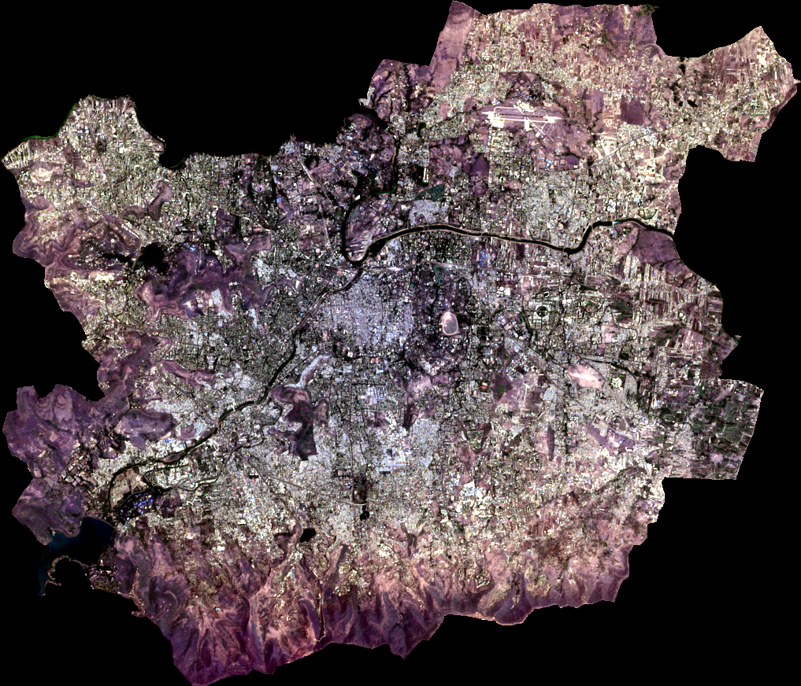
False Colour Composite (NIR: B5-B4-B3) · Red = Vegetation · 2026
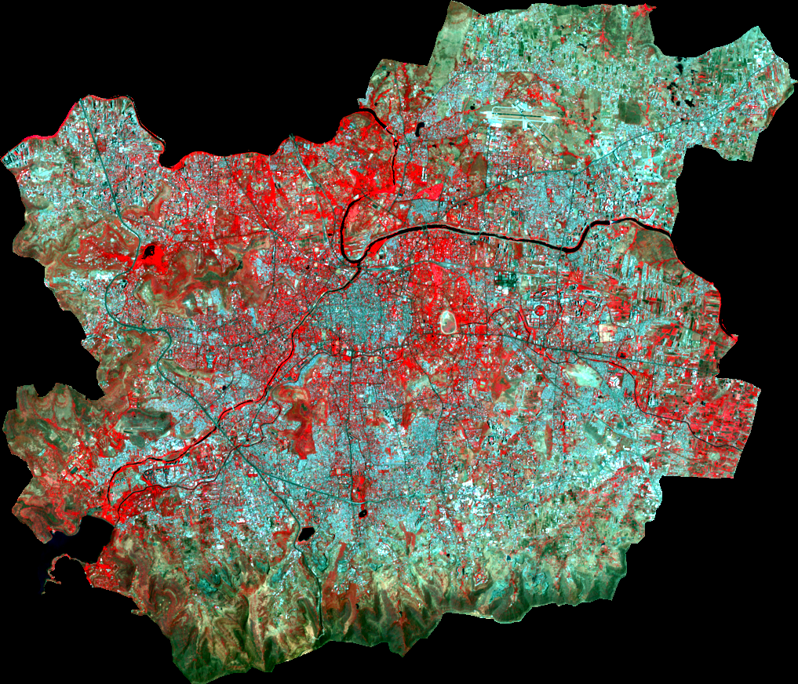
The FCC is particularly revealing. In the false-colour rendering, deep red tones indicate healthy vegetation and cropland — still visible on Pune's periphery — while grey and silver tones indicate dense built-up infrastructure. The spatial shrinkage of red areas between earlier and more recent composites is the visual signature of what the data will confirm numerically.
Surface Temperature (M2 + M3)
The surface is warming — but not uniformly.
Using pre-monsoon (March–June) median Land Surface Temperature (LST) from Landsat 8/9 for every year from 2013 to 2026, the analysis reveals a clear thermal stratification within Pune. The urban core consistently runs hotter than the rural reference zone — a phenomenon known as the Surface Urban Heat Island (SUHI). But the pattern is more nuanced than a simple "city vs. countryside" contrast.
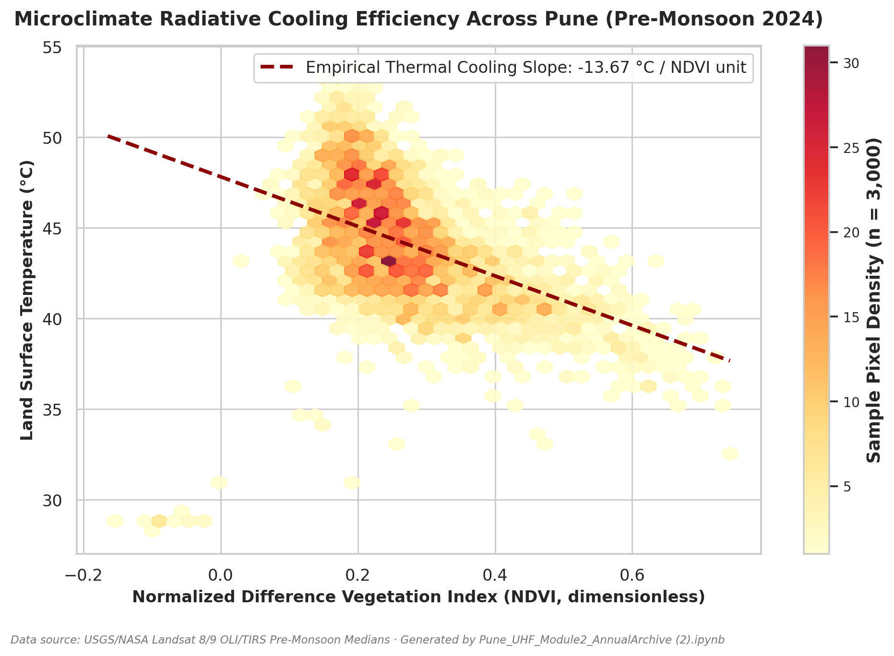
Fig. M2a. Per-pixel relationship between the Normalized Difference Vegetation Index (NDVI) and Land Surface Temperature (LST) across 3,000 sampled Landsat pixels (pre-monsoon 2024 composite). The strong negative empirical slope confirms the cooling efficiency of vegetation — each unit increase in NDVI corresponds to a measurable drop in surface temperature.
The scatter plot above encodes a fundamental ecological relationship: where vegetation survives, surfaces are cooler. The empirical regression slope — derived from 3,000 spatially random pixels across the Pune Municipal Area — confirms that this cooling relationship is spatially robust and statistically significant. Critically, the pixels with the highest LST values are concentrated in the low-NDVI, high Built-Surface Index (BSI) regions that characterise Pune's densely built core.
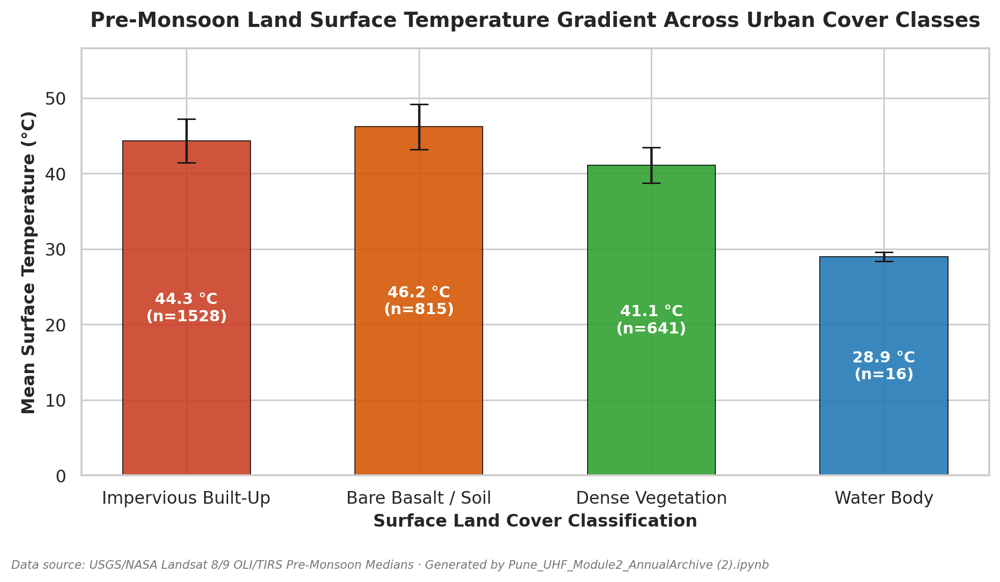
Fig. M2b. Mean pre-monsoon Land Surface Temperature stratified by classified land cover type. Error bars represent ±1 standard deviation across sampled pixels. Impervious Built-Up surfaces register the highest mean LST, confirming that the thermal burden in Pune is disproportionately concentrated in urbanised zones.
The thermal hierarchy by surface cover is stark. Impervious built-up surfaces are the hottest, followed by bare basaltic soil — a material common across the Deccan Plateau and present in Pune's peri-urban fringes. Dense vegetation and water bodies represent the city's primary natural cooling infrastructure. The implications are direct: as impervious surfaces have expanded and vegetation has retreated, Pune's aggregate thermal load has increased.
Module 3 — SUHI Analysis
The urban core runs hotter — day and night — and the gap is widening.
Module 3 formalises the Surface Urban Heat Island measurement using a fixed rural reference mask outside Pune's metropolitan boundary. By comparing the pre-monsoon LST of the urban core against this stable reference, an objective SUHI intensity time-series is constructed for every year from 2013 to 2026.
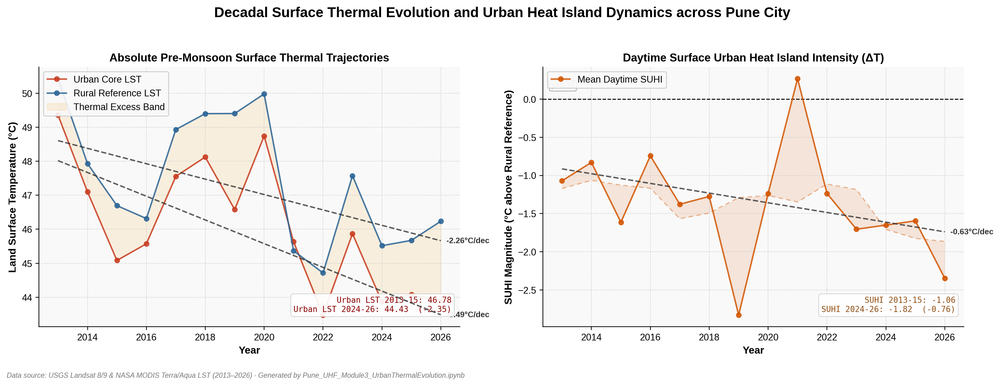
Fig. M3a. Absolute pre-monsoon Land Surface Temperature trajectories for the Pune urban core (red) and fixed rural reference pixels (blue), 2013–2026. The yellow shaded region represents the thermal excess band — the surplus heat absorbed by the urban surface over and above the rural reference. Dashed lines show Theil-Sen non-parametric regression slopes.
Urban LST 2013 Mean
47.9°C
Pre-monsoon daytime
Urban LST 2026 Mean
46.2°C
Pre-monsoon daytime
Mean Daytime SUHI
3.6°C
Urban minus rural reference
Hotspot 90th pct SUHI
5.2°C
Peak daytime urban excess
Mean Nocturnal SUHI
1.6°C
MODIS nighttime (2013–2026)
Urban Night Temp 2026
26.1°C
Nocturnal surface LST
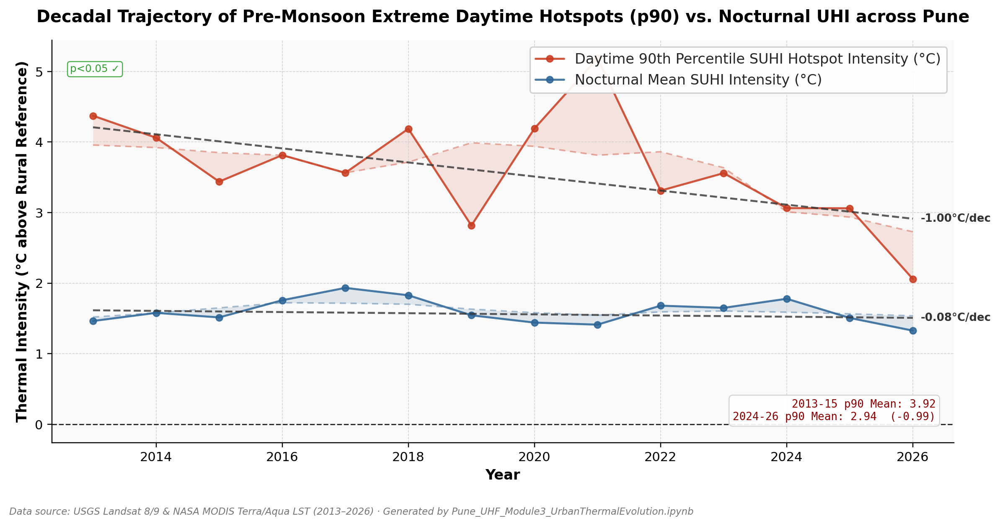
Fig. M3b. Decadal trajectory of daytime 90th-percentile SUHI hotspot intensity (red) versus nocturnal mean SUHI (blue), 2013–2026. Daytime SUHI exhibits a diurnal inversion known as an Urban Cool Island (UCI) — a consequence of shade and high thermal inertia during 10:30 IST overpass timing. Nocturnal SUHI remains persistently positive, averaging +1.6°C above the rural reference — evidence of heat stored in the urban fabric being released after sunset.
The nocturnal signal is critically important. While daytime measurements show the complex physics of shading and thermal inertia, the night-time UHI consistently exceeds +1.4°C and reaches as high as +1.93°C (2017), confirming that Pune's urban fabric is storing and releasing anthropogenic heat even after the sun sets. This has direct implications for heat stress — nighttime temperatures determine whether urban residents can physiologically recover from daytime heat exposure.
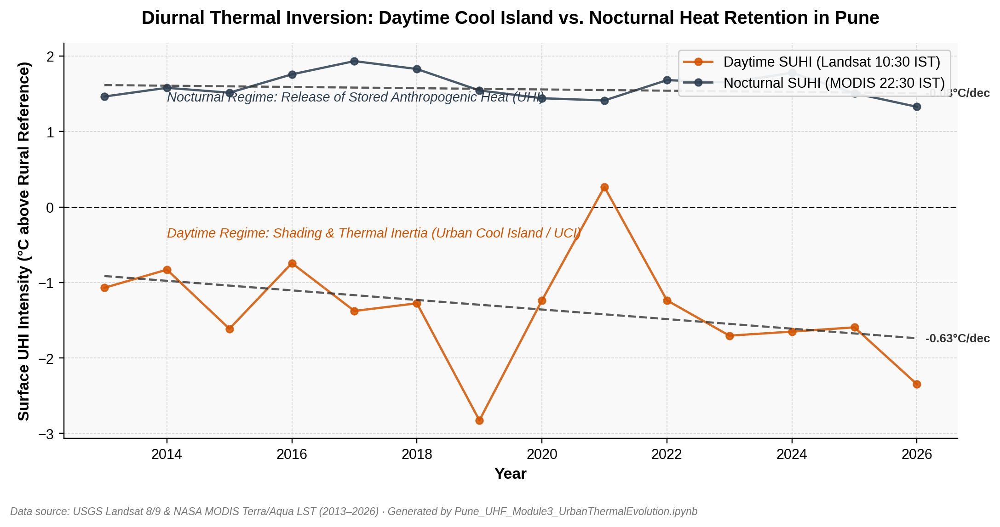
Fig. M3c. Daytime (10:30 IST Landsat) vs nocturnal (22:30 IST MODIS) SUHI intensity, showing the classical diurnal thermal inversion. The nocturnal signal is consistently positive throughout the 14-year record.
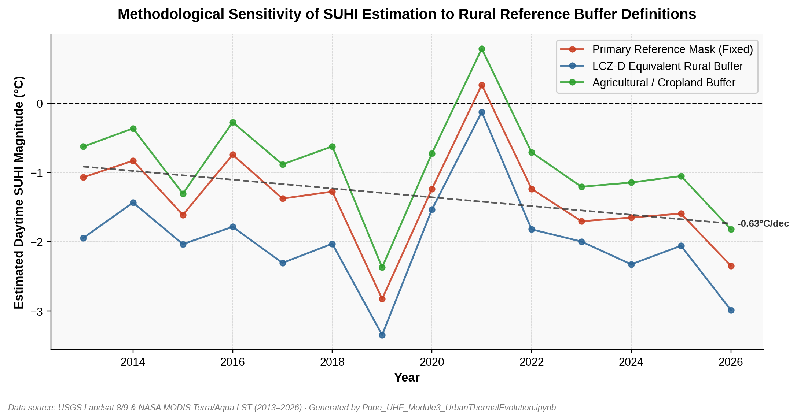
Fig. M3d. Methodological sensitivity analysis showing that the SUHI signal is robust across three distinct rural reference buffer definitions (Primary, LCZ-D, Agricultural). This confirms that the thermal excess is a real physical signal — not an artefact of reference zone selection.
The sensitivity analysis (Fig. M3d) is a critical scientific validation. By testing the SUHI estimate against three methodologically independent rural reference definitions — a fixed primary mask, a Local Climate Zone D (LCZ-D) equivalent buffer, and an agricultural boundary mask — and finding consistent positive UHI signals across all three, we can reject the hypothesis that the measured warming is an artefact of reference selection. The nocturnal heat island is real, persistent, and not a methodological construct.
Land Use / Land Cover — Module 8
What changed on the ground — and by how much?
Thermal evolution does not occur in a vacuum. It is the direct consequence of land transformation. Using the ESRI Global 10-metre Annual Land Cover dataset (Sentinel-2), we can map with precision exactly how Pune's surface composition has changed from 2017 to 2025 across nine land cover classes.
Built Area 2017
297.5 km²
55.4% of municipal area
Built Area 2025
360.9 km²
67.2% of municipal area (+21.3%)
Urban Expansion
+63.4 km²
Added in just 8 years
Cropland Lost
−59.6 km²
−65.6% since 2017
Tree Cover Lost
−3.6 km²
−28.6% since 2017
Green Area 2025
40.1 km²
Down from 103.4 km² in 2017
The numbers are striking. Between 2017 and 2025, Pune's built-up area expanded from 297.5 km² to 360.9 km² — a gain of 63.4 km² in just eight years. This expansion did not occur on empty land. It occurred primarily at the expense of cropland, which declined by 59.6 km² (−65.6%), and to a lesser extent, tree cover, which fell by 3.6 km² (−28.6%). The result is that the total vegetated and agricultural area — which provides evaporative cooling, shade, and albedo regulation — collapsed from 103.4 km² to just 40.1 km² between 2017 and 2025: a reduction of 61% in eight years.
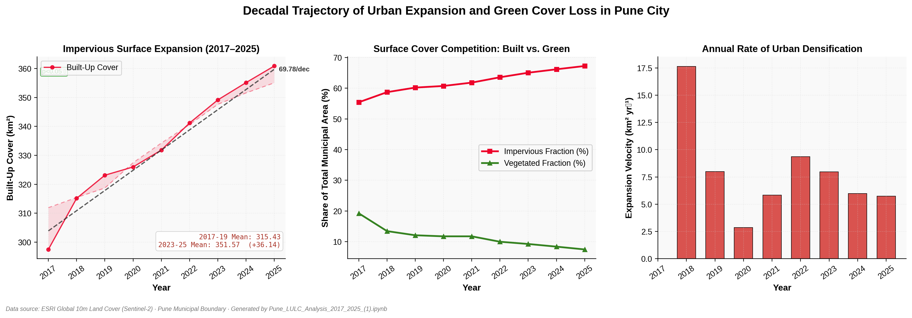
Fig. M8a. Urbanisation metrics across Pune, 2017–2025. Left: cumulative trajectory of built-up cover with Theil-Sen regression slope. Centre: competing trends in impervious fraction vs. vegetated fraction as shares of total municipal area — the two lines cross, marking a structural tipping point in urban ecology. Right: annual expansion velocity (km²/year), showing acceleration in 2018 and 2022.
The central panel of Fig. M8a captures the most consequential trend: the impervious fraction crossed 60% of the total municipal area in 2019 and continued climbing to 67.2% by 2025, while the greenness index — the share of total area under any form of vegetation — fell below 10% in 2022 and reached just 7.5% by 2025. These two trajectories are converging toward an urban ecology with minimal natural thermal buffering capacity.
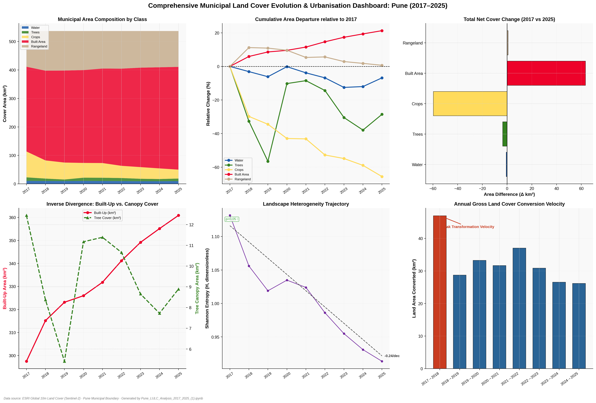
Fig. M8b. Comprehensive LULC analysis dashboard, 2017–2025. Panels show: (A) stacked area composition over time, (B) cumulative departure from 2017 baseline, (C) net 8-year area change by class, (D) built-up vs tree canopy divergence trajectory, (E) Shannon landscape diversity index — declining heterogeneity indicates increasing homogenisation of the urban surface — and (F) annual gross land conversion velocity, revealing peak transformation events.
The declining Shannon Diversity Index in panel E tells an important secondary story. A diverse landscape — mixing agriculture, water, vegetation, and built-up areas — provides spatial heterogeneity that acts as a thermal buffer. As Pune's landscape homogenises toward a predominantly impervious surface, this spatial buffering capacity disappears. The city is becoming more thermally uniform — and uniformly hotter.
Module 8 — Spatiotemporal Animation
Watch the city transform — year by year.
The land cover timelapse below compresses eight years of satellite-observed transformation into a single animated view. Each frame represents one calendar year of ESRI Sentinel-2 10-metre land cover mapping. The animation makes visible what individual maps obscure — the relentless, directional nature of urban encroachment.
ESRI 10m Sentinel-2 Annual Land Cover · 2017–2025
Land Cover Timelapse — Pune Municipal Area
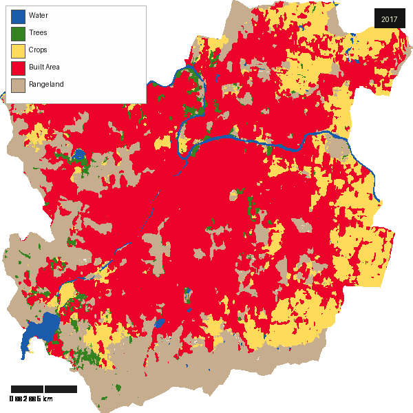
Night-time Lights — Module 9 (NOAA VIIRS DNB)
When the sun sets, urbanisation glows.
Night-time light (NTL) radiance, measured by NOAA's Visible Infrared Imaging Radiometer Suite (VIIRS) Day/Night Band (DNB) at 463-metre resolution, provides an independent, physically distinct proxy for urbanisation. Unlike land cover mapping, which classifies what surfaces exist, NTL measures economic and infrastructure activity — roads, factories, commercial districts, and residential buildings all emit light that VIIRS captures from orbit.
Total Radiance 2013
31,326
nW cm⁻² sr⁻¹ (integrated)
Total Radiance 2026
59,002
nW cm⁻² sr⁻¹ (+88.4%)
Mean Radiance 2013
11.8
nW cm⁻² sr⁻¹
Mean Radiance 2026
22.3
nW cm⁻² sr⁻¹ (+88.5%)
Lit Area (>1 nW) 2013
509.5 km²
At 1 nW cm⁻² sr⁻¹ threshold
High-Intensity (>5 nW) 2026
481.0 km²
Up from 354.3 km² in 2013 (+35.8%)
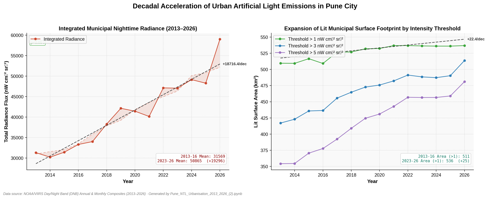
Fig. M9a. Decadal acceleration of VIIRS nighttime radiance across Pune, 2013–2026. Left: integrated total radiance flux, rising from 31,326 to 59,002 nW cm⁻² sr⁻¹ (+88.4%). Right: expansion of lit surface area at three intensity thresholds (1, 3, 5 nW cm⁻² sr⁻¹), revealing that it is not just the spatial footprint of illumination expanding — but the intensity of light in already-lit areas that is increasing most rapidly.
The NTL data reveals a crucial nuance. The lit area at the lowest threshold (>1 nW cm⁻² sr⁻¹) — which captures all illuminated pixels — increased only modestly from 509.5 km² (2013) to 536.8 km² (2026). But the high-intensity footprint (>5 nW cm⁻² sr⁻¹) expanded dramatically — from 354.3 km² to 481.0 km² — an increase of 35.8% in 13 years. This pattern indicates that Pune is not simply spreading light to new areas; existing urban centres are intensifying — densifying, adding commercial activity, and increasing energy consumption. The overall integrated radiance more than doubled (+88%), driven primarily by this intensification dynamic.
Module 9 — Spatiotemporal Animation
From amber glow to blazing constellation.
NOAA VIIRS DNB Annual Composites · 2013–2026
Nighttime Light Timelapse — Pune Metropolitan Area
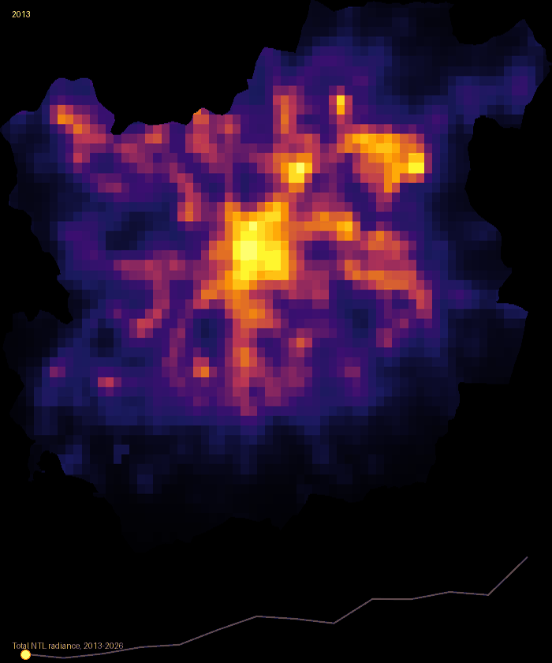
Module 3 — Thermal Animation
Fourteen years of heat — in motion.
Land Surface Temperature is not static — it shifts with urbanisation, vegetation loss, and seasonal climate forcing. The timelapse below animates Landsat-derived pre-monsoon LST composites from 2013 to 2026, using a perceptually uniform heat colourmap. Each frame captures one year of thermal state. Observe how the hottest zones — initially concentrated in the historic urban core — progressively spread outward and intensify as new impervious surfaces are laid down across the urban periphery.
Landsat 8/9 Pre-Monsoon LST · 2013–2026
Surface Temperature Timelapse — Pune Municipal Area
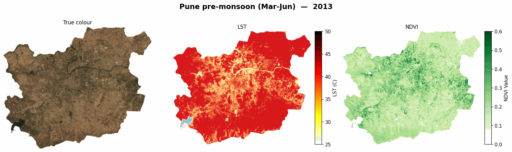
Synthesis — Linking Urbanisation to Thermal Evolution
Four lines of evidence — one conclusion.
Scientific attribution requires convergent evidence. A single dataset showing rising temperatures could reflect regional climate variability, not urbanisation. But when four independent satellite-derived datasets — spanning different sensors, different physical mechanisms, and different spatial resolutions — all point in the same direction, a coherent causal narrative emerges.
"As impervious surfaces expanded from 55% to 67% of Pune's municipal area, and as integrated nighttime radiance nearly doubled, the nocturnal heat island maintained a consistent excess of +1.3°C to +1.9°C above the rural reference — a pattern physically consistent with increased anthropogenic heat emission and reduced vegetative cooling."
Synthesised from M2, M3, M8, M9 analyses — Pune Urban Heat Framework (2026)01
Thermal Stratification (M2)
Per-pixel regression of LST vs. NDVI across 3,000 sampled Landsat pixels confirms a strong inverse relationship. Impervious built-up surfaces register the highest mean LST — a direct consequence of low albedo and high thermal capacity of asphalt and concrete.
02
Persistent Nocturnal UHI (M3)
The nocturnal SUHI averaged +1.6°C above the rural reference consistently across 2013–2026, peaking at +1.93°C (2017). Sensitivity analysis across three independent reference masks confirms this is a real physical signal, not methodological artefact.
03
Rapid Land Cover Conversion (M8)
Built-up area expanded by +63.4 km² (+21.3%) in 8 years, while total vegetated area fell from 103.4 km² to 40.1 km² — a 61% collapse in the natural cooling infrastructure. Cropland conversion to built-up areas accounts for the majority of this flux.
04
Intensifying Night Lights (M9)
Integrated VIIRS radiance increased by +88% from 2013 to 2026. High-intensity lit area (>5 nW cm⁻² sr⁻¹) expanded from 354 to 481 km² (+35.8%), indicating not just spatial spread but densification of energy-intensive activity — a direct driver of anthropogenic heat emission.
I
Spatial Overlap
The areas of strongest NTL intensification between 2013 and 2026 — eastern Pune, Hadapsar, Kharadi — correspond geographically to the areas of highest Built Surface Index (BSI) growth in the M2 archive and the highest SUHI hotspot persistence in M3. This spatial co-location across three independent datasets is not coincidental; it is the thermodynamic signature of rapid urbanisation.
II
Temporal Synchrony
The two highest urban expansion years in M8 — 2018 (+17.6 km²/yr) and 2022 (+9.4 km²/yr) — correspond to the two sharpest jumps in total NTL radiance (+12.6% in 2018 and +17.4% in 2022). This temporal synchrony between land cover conversion and light intensification confirms that both signals are tracking the same underlying process of urban development.
III
Physical Mechanism
The physical pathway connecting these four observations is well-established in urban climate science: (a) agricultural and vegetated land is converted to impervious surface; (b) impervious surface absorbs more solar radiation (lower albedo) and cannot cool via evapotranspiration; (c) increased economic activity generates anthropogenic heat visible as brightening NTL; (d) the combined effect produces a persistent nocturnal UHI as stored heat is radiated after sunset. Each link in this chain is independently evidenced in the Pune datasets.
Conclusion
What changed, why it changed, and what it means for Pune.
Between 2013 and 2026, Pune's thermal landscape underwent a measurable, multi-faceted transformation. The daytime SUHI reveals a consistent thermal excess of 3–5°C in the urban core relative to the rural reference. The nocturnal UHI has maintained +1.3 to +1.9°C above the rural baseline throughout the study period. These thermal signals are accompanied by a +63.4 km² expansion in impervious built-up area, a 61% collapse in total vegetated and agricultural cover, and a +88% increase in integrated nighttime radiance — all within 8–13 years.
The causal attribution is supported not by assumption but by physical evidence. Surfaces with higher NDVI are measurably cooler. Areas that transitioned to built-up cover show coincident increases in both LST and NTL radiance. The nocturnal UHI — driven by heat stored in the urban fabric — remains positive throughout the entire observation period, regardless of which reference mask is used to measure it.
The implication for Pune's residents is not abstract. Urban heat is a health issue. The reduction of Pune's green area from 19% to 7.5% of municipal area in 8 years has eliminated a significant fraction of the city's natural thermal regulation capacity. The nocturnal temperatures recorded in the urban core — consistently warmer than the surrounding countryside — compromise the physiological recovery window that cooler nights would otherwise provide.
Understanding where this thermal burden falls most heavily — across Pune's administrative wards — is the subject of the Ward Heat Risk analysis →